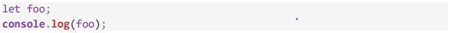
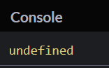
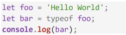
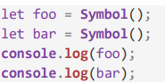
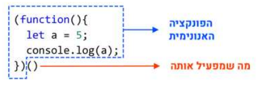
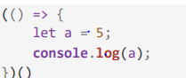
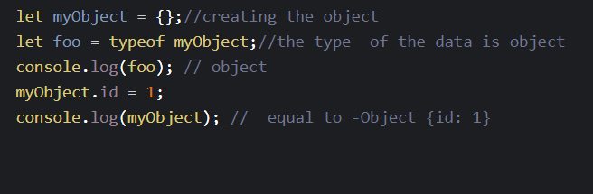
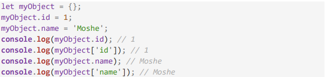
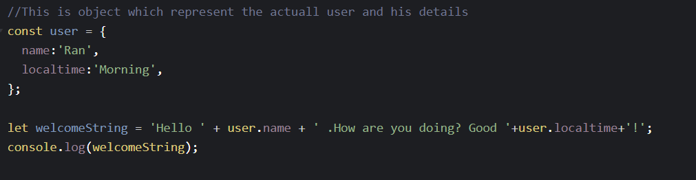

- html
- javaScipt
- css
- JQuery
- of course more many aspects that have connection to this central topics
formal definitions:(from the internet)
1)HTML-HTML, or HyperText Markup Language, allows web users to create and structure sections, paragraphs, and links using elements, tags, and attributes.
However, it’s worth noting that HTML is not considered a programming language as it can’t create dynamic functionality.
2)CSS- Cascading Style Sheet allows you to create great-looking web pages, but how does it work under the hood?
This article explains what CSS is with a simple syntax example and also covers some key terms about the language.
3)JS- is a programming language that is one of the core technologies of the World Wide Web, alongside HTML and CSS.
interseting fact about the javaScript language.....
You ever knew that JavaScript is the world’s most popular programming language? because this fastinating feature I want to teach some "javaScript Secrets" and in addition we learn about the JQuery that based on the JS language . All the elements that we learn here, writing in the code of this website! ,
so get ready for interesting adventure with the most dark secrets of JS language.....

Please roll down for the materil......
The first phenomen is the variable "undefined" variable.
It's value is the first initilization of every value before his initialize.
if we write in the code:

The output in the console:

There is not action that can be close to the undefined variable!!!!
a little tip: if you want to check the kind of varibale, you can using the operator "typeof" like this: 
another kind of information that exprience programmer be know is the NULL value . In another words, the variable doesn't contain any data! attention attention please ....
The meaning of NULL is variable that defined and initilized by the null value.
THERE ARE TWO DIFFERENT KINDS OF INFORMATION!!
good to know: there some people who think that this issue it's mistake in the design of the language ,so null not need to exist
The symbol data type allow to us to create absolutely uniqe vaiable in every definition.
This data type is not string,number or any other type you met....... example for using this data type: 
let's learn to another interesting subject:anonymous function and arrow function
anonymous function its function without a name ,the specialty of this function is the special syntax :

If you rub this section of code you may see that its work although we didnt call to this function -> why?
because you activate this anonymous funnction immediately after the creation of the function.(look at the scheme (:))
A variation of anonymous function is the Arrow function .
The arrow function is anonymouse fucntion without the reserved word of the language of JS "fucntion" like that :

its exactly the same thing but Arrow fucntion have big advantages that wothwhike to use them.
The another data structure that we gonna learn is object
objext can contain information throught keys .
The keys are the way to insert more information thorugh the name of the object .
The goal of this data structure is to create that ca contain another kinfds of data types and data structures.
basic work with objects:


**the access to field of object happends through the name of the variabe that contained the object ,dot and the name of the key**
In our next topic we actually combined two core subjects that we learned: Objects and functions.
*****All the quiz of the html based on objects which stores all the information that we need about the questions****
Because I want to create a responsive website I want to use string patterns that improve our responsivness writing.
different examples for using the string patterns
